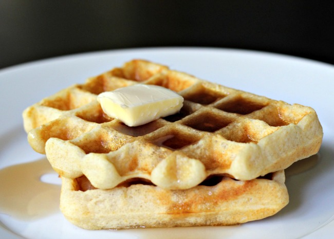

Recipe Name

| Prep: 5 mins |
Cook: 15 mins |
Total: 20 mins |
| Servings: 6 |
Yield: 6 servings |
Ingredients
- 2 eggs
- 2 cups all-purpose flour
- 1¾ cups milk
- ½ cup vegetable oil
- 1 tablespoon white sugar
- 4 teaspoons baking powder
- ¼ teaspoon salt
- ½ teaspoon vanilla extract
Instructions
- Preheat waffle iron. Beat eggs in large bowl with hand beater
until fluffy. Beat in flour, milk, vegetable oil, sugar, baking powder, salt
and vanilla, just until smooth.
- Spray preheated waffle iron with non-stick cooking spray. Pour mix onto
hot waffle iron. Cook until golden brown. Serve hot.